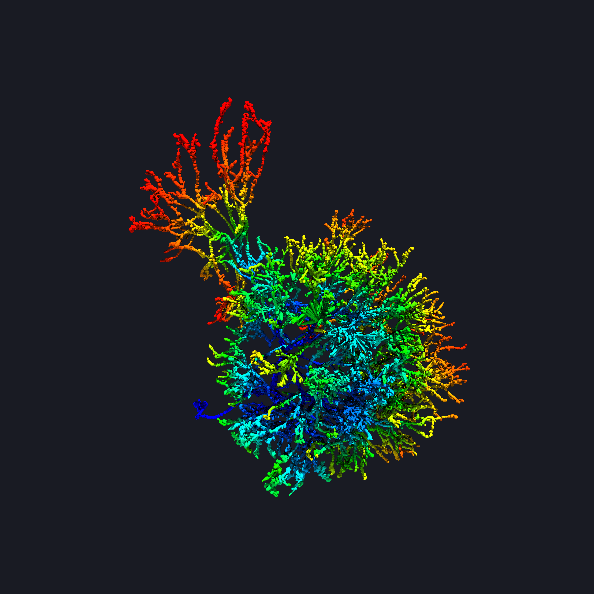

swc2vtk
1.0.2
README
Examples
Draw Mode
Volume Rendering
Gallery
Single neuron morphology (antennal lobe neuron of silk worm moth)
Standard brain mapped neuron simulation (LAL-VPC region of silk worm moth)
Volume rendering of standard brain mapped neurons (LAL-VPC region of silk worm moth)
swc2vtk
swc2vtk
Docs
»
Gallery
View page source
Gallery
¶
Single neuron morphology (antennal lobe neuron of silk worm moth)
¶

Standard brain mapped neuron simulation (LAL-VPC region of silk worm moth)
¶
Volume rendering of standard brain mapped neurons (LAL-VPC region of silk worm moth)
¶